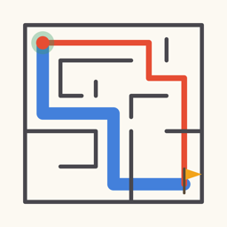

最短との差が分かる迷路
なぞった道と、最短の道をくらべる迷路。
毎回ちがう迷路を、指でなぞってスタートからゴールまで進みます。どの迷路にも、ゴールまでの道が2つ以上あるところがあります。ゴールすると、最短の道を青で重ねて、あなたの歩数とのちがいを見せます。
- 最短との差。「あなた 40歩・最短 34歩（＋6歩）」
- 寄り道した所。最短の道から外れて進んだ所をだいだい色でぬり、いちばん長い寄り道が何歩かを出します
- ヒント。いまの所から最短で3歩ぶんを、青い点で少しのあいだ見せます
- 大きさは 小（8×12）・中（12×18）・大（16×24）。記録（ゴールの回数・最短どおりの回数・いちばん少ない差）
- 登録・課金・オンラインの対戦はありません。記録はこの端末の中だけに保存します。画面のいちばん下に小さな広告が出ます（画面いっぱいの広告・動画の広告は出しません）